Actualizado: 25/11/2026 22:31
Manual de usuario · App Móvil DATASS
Nov 24, 2026 · @Ruben
1. Antes de empezar
La App Móvil DATASS es la aplicación para registrar en campo las actividades de los sistemas de agua y saneamiento: monitoreo del servicio, cloración, limpieza y desinfección, y operación y mantenimiento (O&M). Funciona sin internet: guardas todo en el celular y lo envías a DATASS cuando tengas señal.
Etapa de demostración. En este momento, la App Móvil DATASS se instala y se usa solo para validar los flujos y probar la aplicación con los usuarios. No es la versión final: los nombres, DNI y sistemas son datos de prueba, y lo que registres no se envía a DATASS. Para instalarla en esta etapa, sigue el recuadro «Solo para la demostración» de Instalar la app en el celular.
¿Quién la usa?
| Perfil | Qué hace en la app |
|---|---|
| Operador (JASS, municipalidad, prestador) | Registra las actividades de los sistemas que tiene asignados (hasta 3). |
| Supervisión (ATM, PNSR, RVCS) | Consulta el tablero y el historial. Valida y observa los registros en la web DATASS, no en la app. |
Lo que no puedes hacer, lo verás bloqueado o con la palabra Consultar en lugar de Registrar.
En la demostración hay usuarios de ejemplo para cada nivel de gobierno: Nacional, Regional, Local (provincial y distrital) y Organización comunal. Cada uno indica si Registra o Visualiza, y su ámbito define qué sistemas puede ver o elegir.
Instalar la app en el celular
Abre en Chrome el enlace que te compartió tu coordinador.
Toca el menú ⋮ y elige Instalar app (o Agregar a la pantalla principal).
Aparecerá el ícono del celular con la gota en tu pantalla de inicio.
Ábrela una vez con conexión: desde ese momento funciona sin internet.
En iPhone: abre el enlace en Safari → Compartir → Agregar a inicio.
Solo para la demostración (temporal)
Por ahora se está probando una demo para validar con los usuarios el diseño y la forma de trabajo. No es la versión final: los datos son de prueba y no se conecta con la web DATASS.
Enlace de la demo: rubengrb.github.io/datass-movil-offline. Se instala con los mismos pasos de arriba.
Para entrar: toca «Usuarios de demostración», elige un perfil y toca «Iniciar sesión».
Para tener la última versión: ábrela con conexión, ciérrala y vuelve a abrirla.
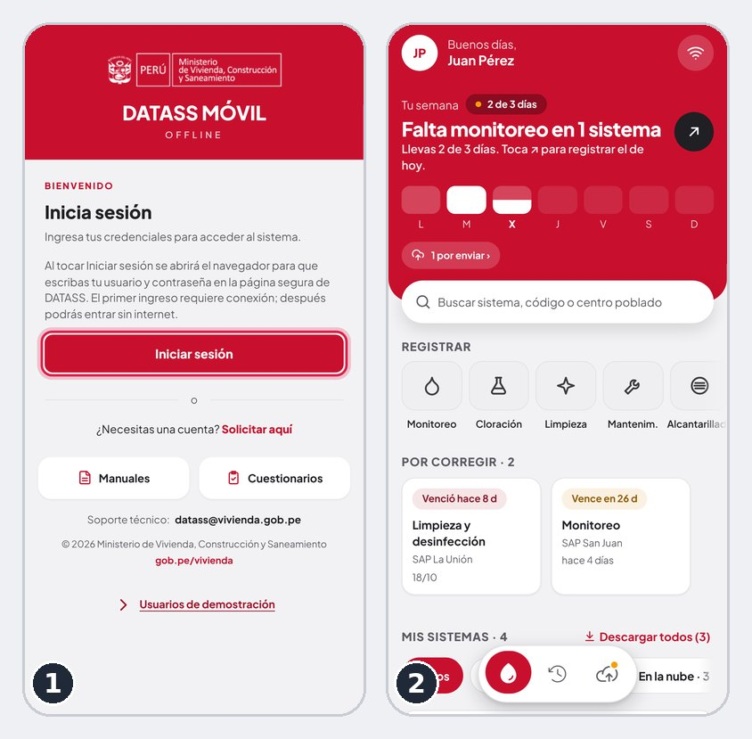
Iniciar sesión
Ingresa con tu DNI y tu contraseña. La primera vez necesitas conexión para descargar tus sistemas asignados.
Ejemplo: Juan Pérez (Operador A) entra con su DNI y ve en el inicio sus sistemas SAP San Juan y SAP La Unión.
Paso a paso
Toca Iniciar sesión e ingresa tu DNI y contraseña en la página segura de DATASS. En la demo, ver el recuadro «Solo para la demostración» de la sección anterior.
Llegas a Inicio: tu semana, los accesos para registrar, lo que tienes por corregir y tus sistemas.
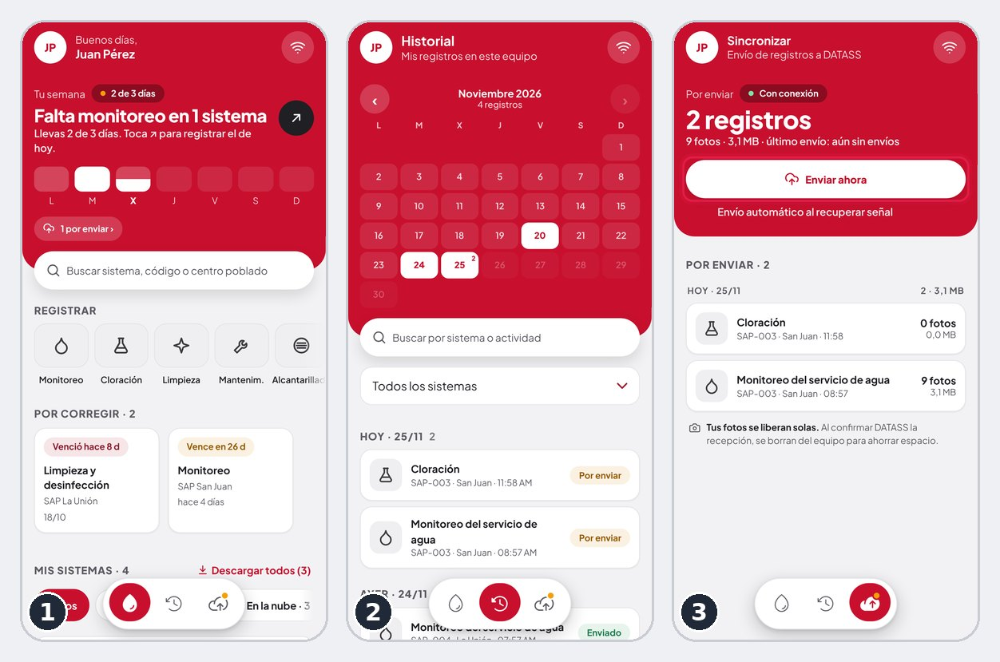
2. Moverse por la app
Las tres páginas principales
La barra flotante de abajo tiene tres botones:
| Botón | Página | Para qué sirve |
|---|---|---|
| 💧 (gota) | Inicio · Mis sistemas | Ver tus sistemas, lo que tienes por continuar y lo que debes corregir. |
| 🕒 (reloj) | Historial | Ver tus registros del mes y su estado. |
| ☁️ (nube) | Sincronizar | Enviar a DATASS lo que tienes guardado. Un punto naranja indica pendientes. |
En la imagen: 1 Inicio, 2 Historial (en calendario) y 3 Sincronizar.
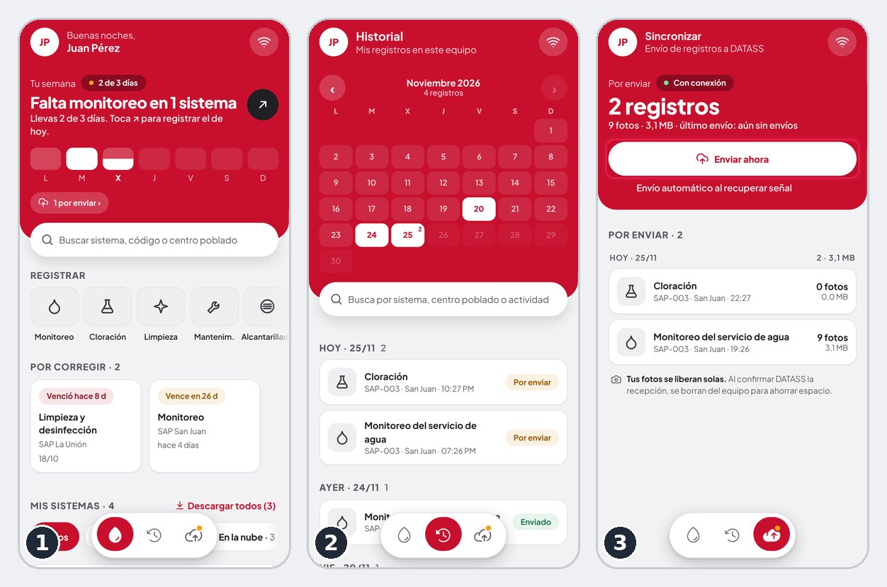
Historial: buscar y filtrar
Buscar: la caja busca por sistema, código del centro poblado, centro poblado, distrito o actividad.
Filtros: toca una etiqueta (Observados, Por enviar o una actividad) para filtrar; vuelve a tocarla para quitar el filtro. Arriba de la lista aparece «Mostrando X de Y» con Limpiar filtros.
Filtrar por sistema: la caja «Todos los sistemas» aparece solo cuando tienes más de 5 sistemas, o al menos 2 sistemas y más de 10 registros. Muestra cuántos registros tiene cada sistema y, debajo de su nombre, el centro poblado.
Qué registros ves: lo que registraste tú que sigue Por enviar, y los registros ya enviados de los sistemas de tu lista. Un registro por enviar de otra persona no aparece: sigue en su celular hasta que lo envíe.
Gestos
Deslizar a los lados sobre el contenido cambia entre Inicio, Historial y Sincronizar.
No cambia de página si deslizas sobre una fila que se mueve de lado (filtros, «Registrar», «Por corregir») ni sobre una tarjeta que se desliza para descartar.
Deslizar desde el borde izquierdo hacia la derecha regresa a la pantalla anterior, igual que la flecha ←.
Dentro de un sistema, deslizar a los lados cambia entre Actividades, Ficha e Historial.
Cabeceras
Dentro de un sistema, la cabecera muestra el código (por ejemplo, SAP-003), el nombre y el centro poblado. Al bajar en la página, se compacta para dejar más espacio.
En las actividades por pasos, la cabecera muestra la barra de pasos (ver sección 5).
El ícono de wifi arriba a la derecha indica si tienes conexión. Tócalo para ver el detalle.
3. Trabajar sin conexión y enviar
Todo lo que registras se guarda primero en el celular. Llega a DATASS solo cuando lo envías con conexión.
Estados de un registro
| Estado | Qué significa | Qué hacer |
|---|---|---|
| Por enviar | Está guardado solo en tu celular. | Envíalo cuando tengas señal. |
| Enviando… | Se está subiendo a DATASS. | Espera; no cierres la app. |
| Sincronizado | DATASS lo recibió y te dio un código de recepción (por ejemplo, DAT-2026-000003). | Nada. Ya está seguro. |
| Error de envío | Falló la conexión a mitad del envío. | Toca Reintentar. El registro no se pierde. |
Cómo enviar
Automático: si en Ajustes tienes activada la Sincronización automática, la app envía los pendientes apenas recupera señal.
Manual: ve a Sincronizar y toca Enviar todos, o desliza un registro en la lista y toca Enviar.
En Sincronizar ves lo que está por enviar y el botón Enviar ahora (imagen de la sección 2, pantalla 3).
Fotografías
Las fotos ocupan la mayor parte del envío (unos 0,35 MB cada una). Si puedes, envía con wifi.
Las fotos se borran del celular solas cuando DATASS confirma que las recibió.
Mantén al menos 500 MB libres en el celular para trabajar tranquilo.
Regla de oro: un registro «Por enviar» solo existe en tu celular. No desinstales la app ni borres sus datos hasta que todo esté sincronizado.
4. Mis sistemas
En el equipo o en la nube
En el equipo: el sistema ya está descargado. Puedes registrar en él sin conexión.
En la nube: está asignado a ti, pero aún no está en tu celular. Toca Descargar en su tarjeta (con conexión): la app te muestra qué va a bajar (datos del sistema y, si falta, el mapa del distrito) y cuánto pesa, y descarga solo cuando confirmas. Descargar todos baja los que faltan de una vez, también con confirmación.
Usa los filtros de arriba de la lista (Todos, En el equipo, En la nube, Agua, Alcantarillado) para encontrar uno rápido, o el buscador por código, nombre o centro poblado.
Nada se descarga sin que lo confirmes: ni al iniciar sesión ni cuando te asignan un sistema nuevo. Mientras baja verás «Descargando · %» en la tarjeta. Si se corta la conexión aparece «Descarga incompleta» y la descarga continúa sola al volver la señal, porque ya la habías aceptado.
Paso a paso: descargar un sistema
En la tarjeta del sistema, toca Descargar (con conexión).
Revisa qué se descargará y cuánto pesa. Si ya tienes el mapa del distrito, no se vuelve a bajar. Toca Descargar · X MB.
La tarjeta muestra el avance. Al terminar, verás «Todo al día» y el sistema queda listo para usarlo sin internet.
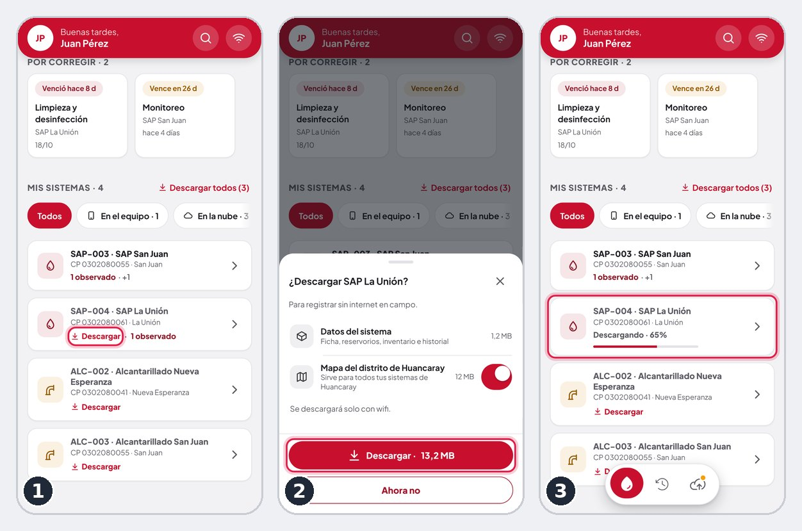
Sistemas asignados
Tus sistemas los registra el ATM en tu ficha de operador, en la web DATASS. Un operador puede tener hasta 3 sistemas, en distintos centros poblados.
Cuando el ATM te asigna uno nuevo, aparece en Mis sistemas con la etiqueta Nuevo y un aviso («Te asignaron…»). No se descarga solo: descárgalo cuando lo vayas a usar. Para consultar asignaciones al momento, ve a Ajustes → Consultar nuevas asignaciones (con conexión).
En tu Perfil
En Perfil tus sistemas se agrupan en En tu equipo (ya descargados) y Asignados sin descargar. Desde ahí también puedes descargar uno o todos, con la misma confirmación. Cada sistema conserva su ícono de agua o alcantarillado. Al final del Perfil está el botón «Cerrar sesión».
En la imagen, la sección En tu equipo del Perfil; debajo aparecen los Asignados sin descargar con su botón de descarga.
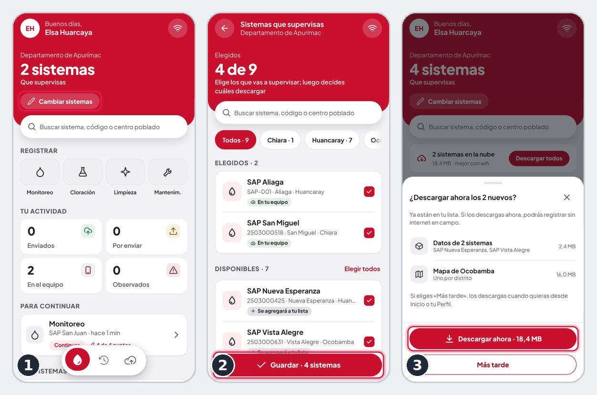
Si supervisas sistemas
Los perfiles de supervisión no tienen sistemas asignados: eligen los que van a supervisar en Sistemas que supervisas (botón Cambiar sistemas en Inicio, o desde Ajustes).
Elegir no es descargar. Las casillas solo arman tu lista: puedes tener 10 o 20 sistemas en distintos lugares sin ocupar espacio. La lista se filtra por departamento, provincia y distrito (cada filtro abre una hoja para elegir una opción) y se divide en Elegidos y Disponibles.
Cada sistema indica qué pasará: «En tu equipo», «Sin descargar», «Se quitará de tu lista», «Se quitará del equipo» o un candado 🔒 si tiene trabajo pendiente: al tocarlo, la app explica el motivo («No puedes quitar … todavía») y te lleva a resolverlo.
Al marcar un sistema nuevo, su línea del centro poblado cambia a «+ Se agregará a tu lista». Al tocar Guardar · N sistemas la app te pregunta si quieres descargar ahora los nuevos, con su tamaño: Descargar ahora o Más tarde. Si desmarcaste uno que ya estaba en tu equipo, primero pide confirmar, con la opción Mantener.
En Inicio y en Perfil ves todos tus elegidos; los que faltan aparecen como en la nube, con Descargar (en Perfil, en Elegidos sin descargar).
Paso a paso: armar tu lista
En Inicio toca Cambiar sistemas.
Marca los sistemas que vas a supervisar (puedes filtrar por departamento, provincia o distrito) y toca Guardar · N sistemas.
La app te pregunta si quieres descargar ahora los nuevos. Toca Descargar ahora o Más tarde.
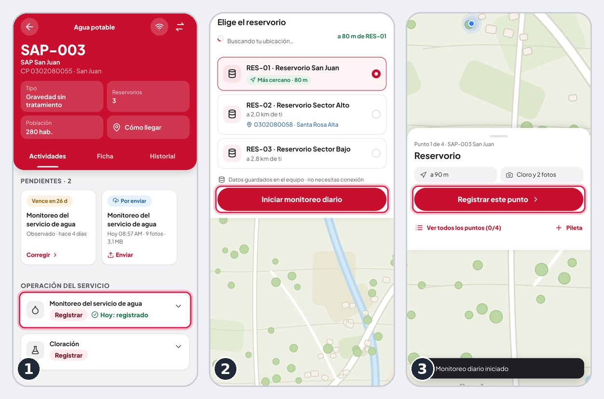
Dentro de un sistema
Al tocar un sistema entras a su página, con tres pestañas:
Actividades: las actividades que puedes registrar, con su estado del día (por ejemplo, «Hoy: pendiente»).
Ficha: el mapa con los componentes (reservorios, captación, etc.) y sus datos. Toca el mapa para ampliarlo; toca un componente de la lista para que el mapa vuele hasta él.
Historial: los registros de ese sistema.
Si un dato del sistema está mal (nombre, ubicación de un componente), no se corrige en la app: pídelo a tu ATM para que lo corrija en la web DATASS.
5. Registrar actividades
Para registrar, entra al sistema → pestaña Actividades → Registrar en la actividad que corresponda. También puedes empezar desde Registrar en el inicio y elegir el sistema.
5.1 Monitoreo del servicio de agua
El monitoreo es un recorrido: empiezas en el reservorio y sigues por la vivienda intermedia y las piletas, en el orden establecido en tu comunidad.
Elige el reservorio de partida. El mapa vuela hasta él y te muestra la distancia y el tiempo caminando.
Toca Iniciar recorrido.
En cada punto: confirma tu ubicación, mide el cloro residual, toma las fotos y guarda.
Al terminar todos los puntos, revisa el resumen y envíalo.
Paso a paso
Abre el sistema y, en Monitoreo del servicio de agua, toca Registrar.
Elige el reservorio y toca Iniciar monitoreo diario.
En el mapa, toca Registrar este punto en el punto que corresponde.
Completa el cloro y las fotos del reservorio y toca Guardar punto.
En cada vivienda, completa las preguntas y toca Siguiente; luego cloro y fotos, y Guardar punto.
Con todos los puntos registrados, toca Revisar resumen del monitoreo.
Revisa los resultados y toca Sincronizar con DATASS (o Guardar y enviar después si no tienes señal).
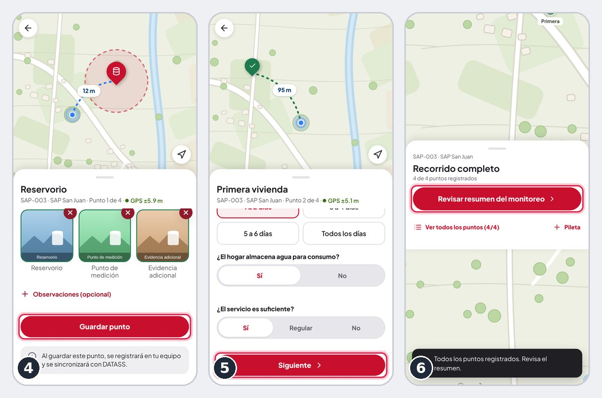
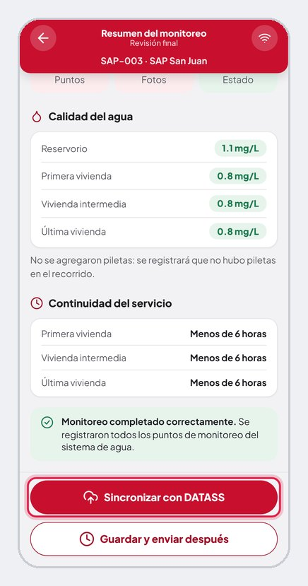
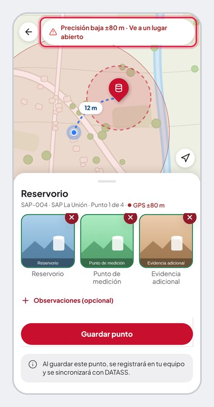
Cloro residual:
| Lectura | Qué pasa |
|---|---|
| Entre 0,5 y 1,5 mg/L | Dentro del rango recomendado (verde). |
| Menos de 0,5 o más de 1,5 mg/L | Se guarda igual, pero queda registrada como alerta para la JASS. |
| Menos de 0 o más de 5 mg/L | Valor fuera de escala: revisa la lectura del comparador. |
Semáforo del GPS (la precisión aparece como un punto de color junto a tu ubicación):
| Color | Precisión | Qué puedes hacer |
|---|---|---|
| 🟢 Verde | Hasta ±20 m | Guardar normalmente. |
| 🟡 Ámbar | Entre ±20 y ±50 m | Guardar, con aviso. Si puedes, espera unos segundos o muévete a un lugar abierto. |
| 🔴 Rojo | Más de ±50 m | Primero el botón muestra «Esperando señal». Si a los 15 segundos no mejora, aparece «Guardar igual»: eliges el motivo y el punto queda marcado como «Ubicación imprecisa» para que tu supervisor lo revise en la web. |
Los límites de 20 y 50 m se pueden ajustar en Ajustes → Precisión del GPS.
En la imagen, el aviso de precisión baja en el mapa. Puedes guardar el punto igual; quedará marcado «Ubicación imprecisa» para que tu supervisor lo revise.

Distancia al punto anterior: cada punto muestra cuántos metros hay desde el último punto que registraste. Si estás muy cerca (menos de 20 m, o menos que la suma de las precisiones del GPS), la app te pregunta si ya te moviste. Puedes guardar igual: la distancia queda en el registro.
Ejemplo: registras la Pileta 2 a 8 m de la Pileta 1. La app te avisa «Estás muy cerca de Pileta 1. ¿Ya te moviste a esta vivienda?». Si es correcto, guardas y listo.
5.2 Cloración
La cloración se registra por pasos. La cantidad depende del equipo y del método:
| Caso | Pasos |
|---|---|
| Método de preparación A | 9 |
| Método de preparación B (agrega la preparación previa) | 10 |
| Equipo «Otros» (clorinador en línea, clorogás) | 4, sin calculadora guiada |
Los pasos son: punto de cloración → equipo instalado → medición de caudal → método de preparación → (preparación previa) → dosis → cálculo → preparación → calibración → resumen.
Barra de pasos (en la cabecera):
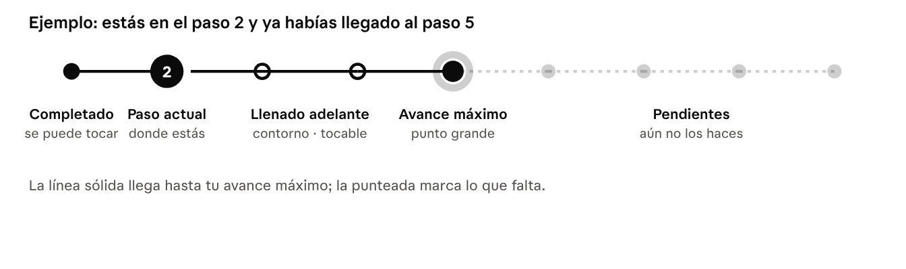
barra de pasos · cinco estados de los puntos
En la app los colores siguen la paleta elegida; la forma de cada punto es la misma en todas.
Reglas de la barra y la flecha:
La flecha ← va al paso anterior. Desde el paso 1, vuelve al sistema. Lo llenado no se pierde.
Toca un punto ya llenado para ir directo a ese paso, hacia atrás o hacia adelante, hasta tu avance máximo.
Si al regresar cambias el método o el equipo, los pasos siguientes cambian y el avance máximo se reinicia en el paso donde estás.
Puntos de cloración creados en campo: si el punto no está en la lista, toca Agregar otro punto de cloración (caseta de bombeo, planta de tratamiento, captación o línea de distribución). Mientras el registro no se envíe, el punto aparece como «Nuevo · por enviar» y puedes editarlo o eliminarlo. Una vez enviado, ya no se edita desde la app.
Equipos: cada tarjeta muestra una descripción corta. Toca la ⓘ junto al nombre para ver la descripción completa y un dibujo grande del equipo.
Medición de caudal con recipiente: elige el volumen del recipiente (10 L, 20 L u otro), toca Iniciar cuando empieza a llenarse y Detener y registrar cuando se llena. Haz al menos 3 mediciones; la app calcula el caudal con ellas. Si el sistema tiene caudalímetro u otro instrumento, elige «Lectura de instrumento» y anota la lectura con su unidad.
Paso a paso
Elige el punto donde está el equipo y toca Continuar.
Confirma o elige el equipo instalado y toca Continuar.
Mide el caudal y toca Usar este caudal.
Revisa la capacidad del tanque y la dosis, y toca Calcular preparación.
Revisa la cantidad de hipoclorito y toca Ver pasos de preparación.
Completa la preparación y la calibración. En el resumen toca Guardar y sincronizar o Guardar en el equipo.
Verás la confirmación con todos los datos del registro.
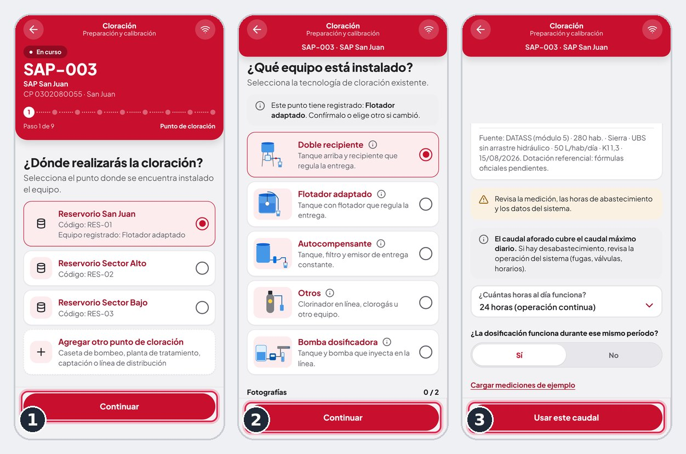

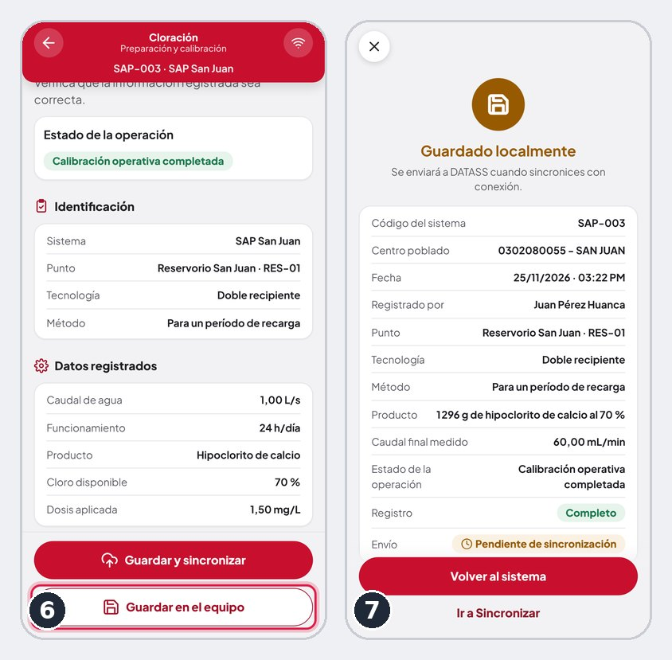
5.3 Limpieza y desinfección
Registra la limpieza de cada unidad del sistema (reservorio, captación, etc.) con sus fotos. La app te muestra cuántas unidades llevas (por ejemplo, «7 de 7»).
Paso a paso
Confirma la verificación previa (población informada, EPP e insumos) y toca Seleccionar componentes.
Elige el componente que vas a limpiar.
Registra el método, los insumos y las 4 fotos (antes, durante, después e insumos) y toca Guardar unidad.
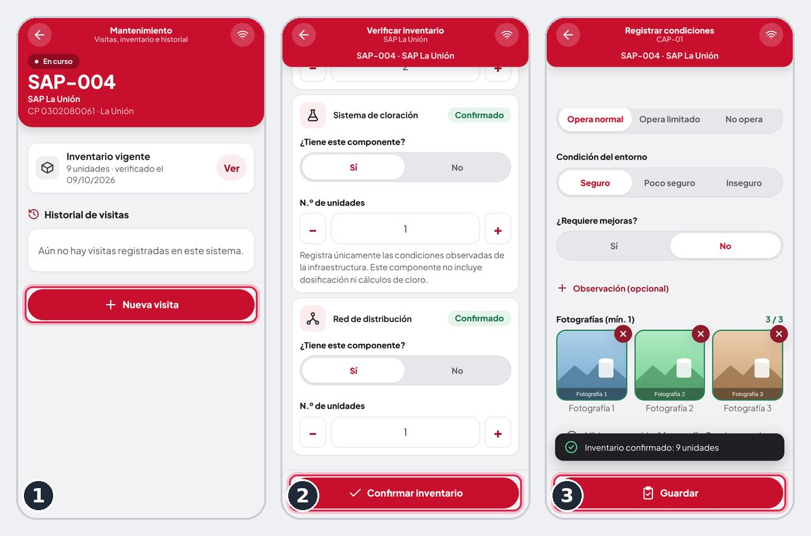
5.4 Operación y mantenimiento (agua potable y alcantarillado)
Registra una visita al sistema: su situación y el estado de cada componente. Si encuentras un componente adicional en campo, puedes agregarlo; quedará para revisión en la web.
Paso a paso
Toca Nueva visita.
Verifica el inventario de componentes y toca Confirmar inventario.
Registra las condiciones de cada componente con su foto y toca Guardar.

6. Borradores y «Para continuar»
La app guarda sola mientras registras. Si sales a la mitad (regresas al inicio, cierras la app o se apaga el celular), el registro queda como borrador.
Los borradores aparecen en el inicio, en Para continuar, con la actividad, el sistema, hace cuánto lo tocaste y tu avance (por ejemplo, «1 de 4 puntos»).
Toca la tarjeta o Continuar para seguir donde te quedaste.
Puedes tener un borrador por actividad en cada sistema.
Descartar un borrador
Si ya no lo necesitas, desliza la tarjeta hacia la izquierda y toca Descartar. La app te pide confirmar, porque lo descartado no se puede recuperar.
Ejemplo: empezaste un monitoreo en SAP San Juan, registraste el reservorio y tuviste que irte. Al día siguiente, en el inicio verás «Monitoreo · SAP San Juan · 1 de 4 puntos». Lo tocas y sigues con la vivienda intermedia.
7. Después de enviar: validación, observaciones y anulación
Cuando un registro llega a DATASS, un supervisor (ATM) lo revisa en la web DATASS. En la app solo ves el resultado.
ciclo de validación de un registro · celular y web
Tú solo actúas en la columna de la izquierda; aprobar, observar y cerrar por vencimiento ocurre en la web.
| Estado en la app | Qué significa | Plazo |
|---|---|---|
| En validación | El supervisor todavía no lo revisa. | El supervisor tiene 48 h. |
| Validado | Aprobado. No tienes que hacer nada. | — |
| Observado · por subsanar | El supervisor dejó un comentario (por ejemplo, «Falta la fotografía de insumos»). | Tienes 30 días para corregir. |
| Subsanado | Lo corregiste y reenviaste; vuelve a validación. | — |
| Vencido | Pasaron los 30 días sin corregir. Ya no se puede reenviar desde la app. | Coordina con tu supervisor. |
Corregir un registro observado
En el inicio, en Por corregir, verás la tarjeta con los días que te quedan («Vence en 26 días») o si ya venció.
Tócala, lee la observación del supervisor y toca Corregir.
Cambia lo que pide la observación y reenvía.
En la imagen: 1 el registro observado en Pendientes del sistema, 2 el detalle con la observación y el botón Corregir y reenviar, 3 la pantalla de corrección con Reenviar a validación.
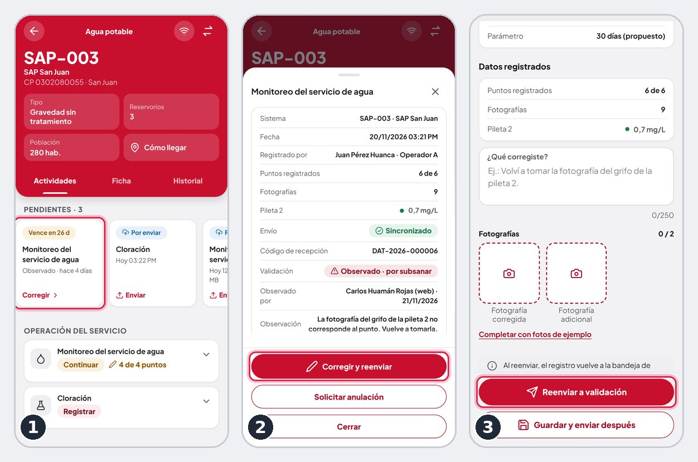
Pedir la anulación de un registro ya enviado
Un registro sincronizado ya no se puede borrar desde la app. Si te equivocaste:
Abre el registro en Historial y toca Solicitar anulación.
Elige el motivo: registro duplicado, sistema equivocado, datos erróneos u otro.
El ATM revisa la solicitud en la web. Mientras tanto, el registro sigue vigente.
Un registro por enviar sí se puede eliminar, porque todavía no está en DATASS: deslízalo en la lista y toca Eliminar.
8. Almacenamiento: ver y liberar espacio
En Ajustes → Almacenamiento ves cuánto ocupa DATASS en tu celular:
Una barra de colores con lo que ocupan los mapas, los sistemas y las fotos por enviar, y el espacio libre del celular.
Una sugerencia cuando tienes sistemas sin actividad en los últimos 30 días que podrías quitar. Solo te avisa: con Revisar se resaltan esos sistemas, pero nunca se quita nada por su cuenta.
La lista de sistemas descargados, de mapas y de fotos por enviar, cada uno con su tamaño.
Lo que más ocupa suelen ser los mapas (decenas de MB por distrito) y las fotos. Cada sistema ocupa alrededor de 1 MB.
Quitar un sistema del equipo
Toca la papelera junto al sistema. La app te dice cuánto espacio liberas y qué pasará, y te deja elegir Quitar del equipo o Mantener. No se borra nada en DATASS.
Operador: el sistema sigue asignado. Queda «Sin descargar» en Mis sistemas (y en Perfil, en Asignados sin descargar) y puedes volver a descargarlo con conexión. Mientras tanto, sin conexión no podrás registrar en él.
Supervisión: igual que el operador, el sistema sigue en Sistemas que supervisas como «Sin descargar» y puedes volver a descargarlo con conexión. Para sacarlo de tu lista, desmárcalo en Sistemas que supervisas.
Para quitar un sistema necesitas conexión. Sin señal, tus sistemas se mantienen en el equipo.
En la imagen: 1 Almacenamiento con la papelera junto al sistema, 2 la confirmación con Quitar del equipo o Mantener.
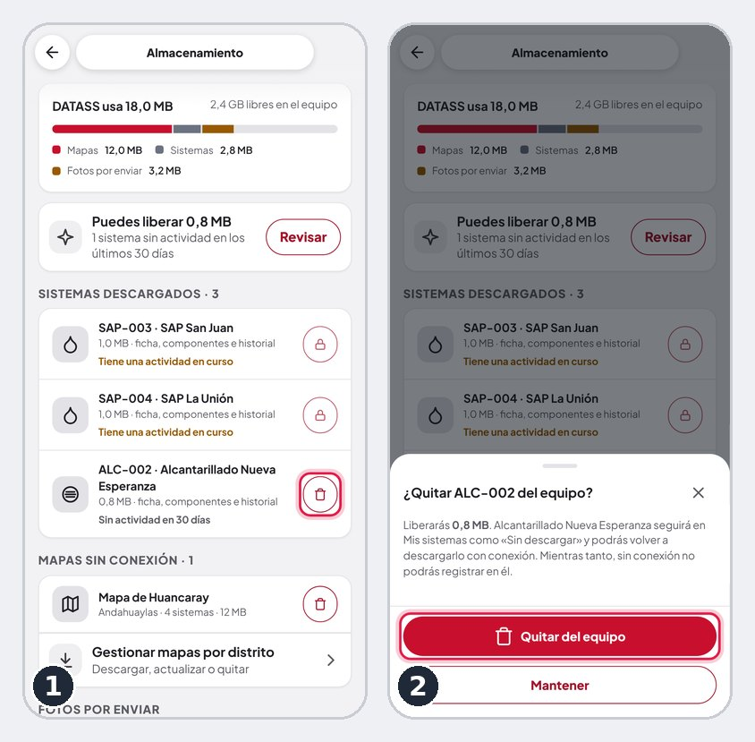
Cuándo NO se puede quitar un sistema
Para que no pierdas trabajo, la papelera se cambia por un candado 🔒 en estos casos:
| Motivo | Por qué | Qué te ofrece la app |
|---|---|---|
| Tiene una actividad en curso | Hay un borrador sin terminar en ese sistema. | Continuar registro |
| Tiene registros por enviar | Esos registros solo están en tu celular. | Enviar ahora |
| Tiene un registro observado por corregir | Para corregirlo necesitas los datos del sistema. | Ir a corregir |
Al tocar el candado, la app explica el motivo y te lleva a resolverlo. Cuando el sistema queda sin pendientes, ya puedes quitarlo.
¿Y si quiero borrar un borrador que ya no sirve? Descártalo a propósito desde Para continuar (sección 6). Después podrás quitar el sistema. No hay un botón de «borrar de todos modos», para evitar perder trabajo por accidente.
Mapas
Desde Gestionar mapas por distrito puedes descargar, actualizar o quitar el mapa de cada distrito. Un mapa sirve para todos tus sistemas de esa zona y se sugiere actualizarlo cada 6 meses. Sin mapa descargado, sin señal verás el mapa ilustrado.
9. Ajustes
Toca tu foto o tus iniciales (arriba a la izquierda en el inicio) para abrir tu Perfil y entra a Ajustes.
| Opción | Para qué sirve |
|---|---|
| Tema | Claro, oscuro o automático (sigue al celular). |
| Apariencia | La paleta de colores de la app (hay 19, en modo claro y oscuro), el tamaño de las tarjetas (compacta o amplia) y las sombras. La paleta por defecto es Institucional (rojo). |
| Vistas | Cómo ver el Historial (resumen o calendario) y el recorrido de monitoreo (mapa o lista). |
| Almacenamiento | Cuánto ocupa la app y cómo liberar espacio (sección 8). |
| Precisión del GPS | Los límites del semáforo: verde hasta ±20 m y rojo desde ±50 m (sección 5.1). |
| Sincronización automática | Si está activada, envía los pendientes apenas recuperas señal. |
| Consultar nuevas asignaciones | Trae los sistemas que el ATM te agregó en la web. Necesita conexión. |
| Permisos | Qué actividades puede registrar tu perfil. |
Al final de Ajustes está la versión de la app (por ejemplo, «Versión 24/11 · 22:00»). Úsala para comprobar que tienes la última versión.
Recibir una versión nueva
Cuando se publica una versión nueva, la app la descarga sola al abrirla con conexión. Para usarla: ciérrala por completo y ábrela otra vez.
10. Las reglas en una página
| Tema | Regla |
|---|---|
| Sistemas asignados | Hasta 3 por operador, en distintos centros poblados. Los asigna el ATM en la web. |
| Trabajo sin conexión | Solo en sistemas en el equipo. Nada se descarga sin tu confirmación: descárgalos antes de ir a campo. |
| Envío | Un registro «Por enviar» solo existe en tu celular hasta que se sincroniza. |
| GPS | Verde hasta ±20 m, ámbar hasta ±50 m, rojo desde ±50 m. En rojo se puede guardar y el punto queda marcado «Ubicación imprecisa» para revisión. En la demo, con «Exigir precisión del GPS» (Perfil → Modo demostración) se espera 15 segundos y se pide el motivo. |
| Distancia entre puntos | Aviso si estás a menos de 20 m del punto anterior. Puedes guardar igual. |
| Cloro residual | Rango recomendado 0,5 a 1,5 mg/L. Fuera de rango se registra como alerta. |
| Cloración por pasos | 9 pasos (método A), 10 (método B) o 4 (equipo «Otros»). La flecha va al paso anterior; desde el paso 1, al sistema. |
| Puntos creados en campo | Se editan o eliminan mientras el registro no se envíe. |
| Borradores | La app guarda sola. Un borrador por actividad en cada sistema. Se descartan deslizando la tarjeta. |
| Validación | La hace el supervisor en la web, en un plazo de 48 h. |
| Observaciones | 30 días para corregir y reenviar. Después queda «Vencido». |
| Anulación | Un registro enviado no se borra: se pide la anulación al ATM. Uno por enviar sí se elimina. |
| Quitar un sistema | Siempre con confirmación y con conexión. No se puede con actividad en curso, registros por enviar o un observado por corregir. |
| Fotos | Se borran del celular cuando DATASS confirma la recepción. Mantén al menos 500 MB libres. |
Preguntas frecuentes
Registré todo sin señal. ¿Se perdió? No. Está guardado en tu celular como «Por enviar». Se enviará cuando tengas conexión (solo, si tienes la sincronización automática activada, o desde Sincronizar).
El botón dice «Esperando señal» y no me deja guardar. El GPS está en rojo (precisión peor que ±50 m). Sal a un lugar abierto, lejos de techos y árboles, y espera unos segundos. Ese bloqueo solo aparece si está activo «Exigir precisión del GPS» (Perfil → Modo demostración): si a los 15 segundos no mejora, toca «Guardar igual», elige el motivo y guarda. Si no está activo, verás el aviso pero puedes guardar al instante. Tu supervisor verá la marca «Ubicación imprecisa» al validar.
Me equivoqué en un registro que ya envié. Ábrelo en Historial y toca Solicitar anulación. Si el supervisor lo observa, podrás corregirlo desde Por corregir.
No aparece un sistema que me asignaron. Con conexión, ve a Ajustes → Consultar nuevas asignaciones. Si sigue sin aparecer, consulta con tu ATM.
No me deja quitar un sistema del equipo. Tiene algo pendiente: una actividad en curso, registros por enviar o un registro observado. Toca el candado para ver cuál y resolverlo.
¿Cómo sé si tengo la última versión? Mira el número de versión al final de Ajustes y compáralo con el que te indique tu coordinador.